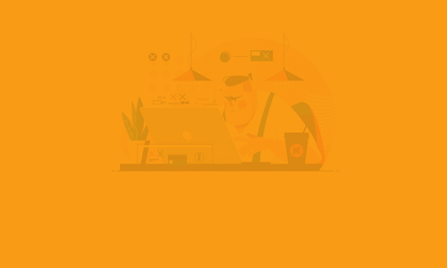

Materi disampaikan secara menarik sehingga mudah dipahami.
Penugasan
Di akhir penugasan selalu disampaikan pemecahan masalahnya.

Profesionalitas Dosen
Pengajar sangat disiplin waktu dan jarang berhalangan.
Mata kuliah design web sangat bermanfaat bagi mahasiswa agar dapat membuat design web dengan baik.
Mahasiswa diajarkan untuk membuat design web dari nol menggunakan html, css, javascript, dan sebagainya.
Setiap pertemuan dan penugasan selalu diberikan modul yang dapat menunjang pemahaman mahasiswa terhadap materi yang disampaikan.
Menurut saya, sejauh ini mata kuliah design web adalah mata kuliah dengan eksekusi paling baik di antara mata kuliah yang lain!
Kritik & Saran
Kritik
Waktu yang diberikan untuk mata kuliah design web sangat kurang sehingga materi yang disampaikan belum mendalam dan pengajar terkesan sangat cepat dalam menyampaikan materi.
Selain itu, tugas yang diberikan masih terlalu umum sehingga banyak mahasiswa yang cukup menyelesaikannya dengan melakukan copy-paste code dari internet.
Saran
SKS untuk mata kuliah design web hendaknya ditambah agar ada tambahan waktu untuk memperdalam materi lebih lanjut dan pengajar tidak akan terlalu cepat dalam menyampaikan materi.
Selain itu, dalam materi wireframe-mockup saya berharap mahasiswa juga terdapat praktik dasar-dasar untuk menggunakan software/aplikasi untuk mendesign.